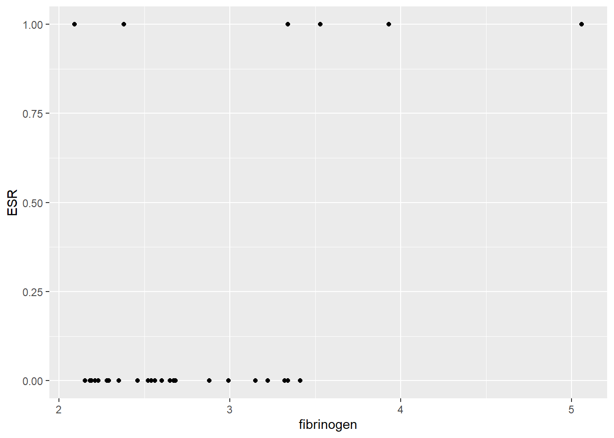
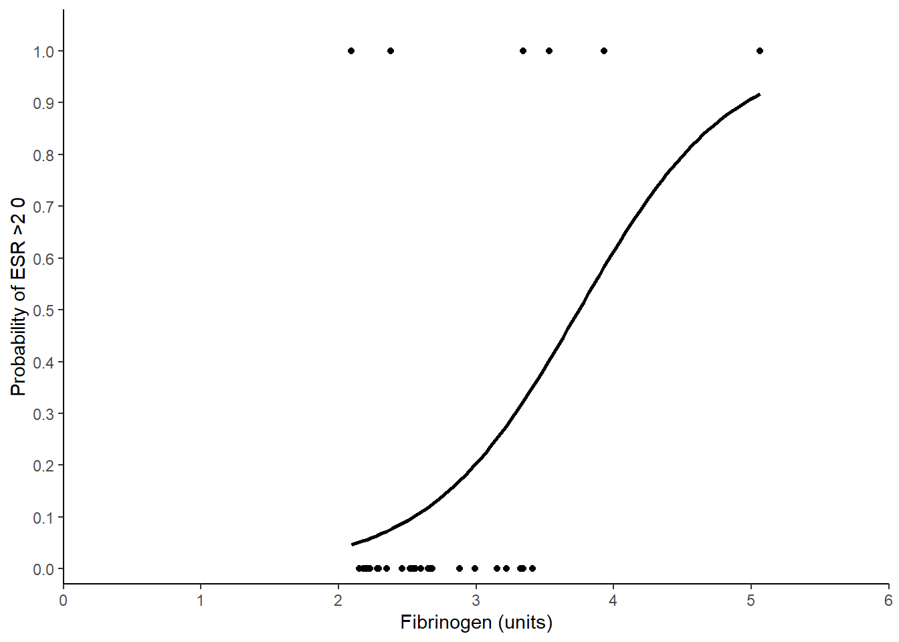

Chapter 6 Single continuous explanatory
6.1 Introduction to the example
The erythrocyte sedimentation rate (ESR) is a routine test for inflammation where a reading greater than 20mm/hr indicates inflammation. However, fibrinogen levels also affect ESR. The aim of this analysis is to determine whether an ESR greater than 20mm/hr can be predicted from fibrinogen levels.
The data in plasma.txt are a simplified version of Collett and Jemain’s (1985) data which comes with the HSAUR package (Everitt and Hothorn 2017). There are two variables: ESR where 0 indicates less than or equal to 20mm/hr and 1 indicates greater than 20mm/hr; and fibrinogen in arbitrary units.
| fibrinogen | ESR |
|---|---|
| 2.52 | 0 |
| 2.56 | 0 |
| 2.19 | 0 |
| 2.18 | 0 |
| 3.41 | 0 |
| 2.46 | 0 |
| 3.22 | 0 |
| 2.21 | 0 |
| 3.15 | 0 |
| 2.60 | 0 |
| 2.29 | 0 |
| 2.35 | 0 |
| 3.15 | 0 |
| 2.68 | 0 |
| 2.60 | 0 |
| 2.23 | 0 |
| 2.88 | 0 |
| 2.65 | 0 |
| 2.28 | 0 |
| 2.67 | 0 |
| 2.29 | 0 |
| 2.15 | 0 |
| 2.54 | 0 |
| 3.34 | 0 |
| 2.99 | 0 |
| 3.32 | 0 |
| 5.06 | 1 |
| 3.34 | 1 |
| 2.38 | 1 |
| 3.53 | 1 |
| 2.09 | 1 |
| 3.93 | 1 |
The response is ESR where 0 indicates less than or equal to 20mm/hr and 1 indicates greater than 20mm/hr. Fibrinogen is the explanatory variable.
We will import the data with the read_table2() function and plot it with ggplot().
# a default scatter plot of the data
ggplot(data = plasma, aes(x = fibrinogen, y = ESR)) +
geom_point() Those with lower ESR do seem to have lower fibrinogen and half of those with high ESR have high fibrinogen. However, we have relatively few high ESR observations. Is the association significant?
6.2 Applying and interpreting glm()
We build a generalised linear model of ESR explained by fibrinogen with the glm() function as follows:
Printing mod to the console gives us the estimated model parameters:
mod
#
# Call: glm(formula = ESR ~ fibrinogen, family = binomial, data = plasma)
#
# Coefficients:
# (Intercept) fibrinogen
# -6.85 1.83
#
# Degrees of Freedom: 31 Total (i.e. Null); 30 Residual
# Null Deviance: 30.9
# Residual Deviance: 24.8 AIC: 28.8We will postpone discussing the information in the last three lines until we view the model summary.
\(\beta_{0}\) is labelled “(Intercept)” and \(\beta_{1}\) is labelled “fibrinogen”. Thus the equation of the line is:
So the equation of the model is:
The fact that the estimate for fibrinogen (1.827) is positive tells us the probability of having an ESR greater than 20 mm/hr increases as fibrinogen increases.
The fact that the estimate for the intercept (-6.845) is negative tells us the probability of having an ESR greater than 20 mm/hr is lower than the probability of having an an ESR less than 20 mm/hr at a fibrinogen of zero.
These estimates are on the scale of the link function - they are log odds.
To understand the parameters the on the scale of the response we apply the inverse of the link function. We need to first exponentiate them, then interpret them as odds.
0.001 is the odds of an ESR >20 at a fibrinogen of 0. Odds are P(ESR > 20) / P(ESR < 20). As this is less than 1, the probability of an ESR >20 must be smaller than the probability ESR < 20 at a fibrinogen of 0.
6.216 is the factor by which this odds changes with each unit of fibrinogen. As this is greater than 1, it’s going up, not down.
An alterative way to write the equation of the line is:
More information including statistical tests of the model and its parameters is obtained by using summary():
summary(mod)
#
# Call:
# glm(formula = ESR ~ fibrinogen, family = binomial, data = plasma)
#
# Deviance Residuals:
# Min 1Q Median 3Q Max
# -0.930 -0.540 -0.438 -0.336 2.479
#
# Coefficients:
# Estimate Std. Error z value Pr(>|z|)
# (Intercept) -6.845 2.770 -2.47 0.013 *
# fibrinogen 1.827 0.901 2.03 0.043 *
# ---
# Signif. codes: 0 '***' 0.001 '**' 0.01 '*' 0.05 '.' 0.1 ' ' 1
#
# (Dispersion parameter for binomial family taken to be 1)
#
# Null deviance: 30.885 on 31 degrees of freedom
# Residual deviance: 24.840 on 30 degrees of freedom
# AIC: 28.84
#
# Number of Fisher Scoring iterations: 5The Coefficients table gives the estimated \(\beta_{0}\) and \(\beta_{1}\) again but along with their standard errors and tests of whether the estimates differ from zero. The estimated value for the intercept is -6.845 \(\pm\) 2.77 and this differs significantly from zero (\(p\) = 0.013). The estimated value for the slope is 1.827 \(\pm\) 0.901, also differs significantly from zero (\(p\) = 0.043).
Towards the bottom of the output there is information about the model fit. The null deviance (what exists if we predict the odds of ESR > 20 from an intercept, \(\beta_{0}\), only model) is 30.885 with 31 degrees of freedom and the residual deviance (left over after our model is fitted) is 24.84 with 30 \(d.f.\). The model fits a 1 parameter, \(\beta_{1}\), and thus accounts for 1 \(d.f.\) for a reduction in deviance by 6.045.
To get a test of whether the reduction in deviance is significant for each term in the the model formula we use:
anova(mod, test = "Chisq")
# Analysis of Deviance Table
#
# Model: binomial, link: logit
#
# Response: ESR
#
# Terms added sequentially (first to last)
#
#
# Df Deviance Resid. Df Resid. Dev Pr(>Chi)
# NULL 31 30.9
# fibrinogen 1 6.04 30 24.8 0.014 *
# ---
# Signif. codes: 0 '***' 0.001 '**' 0.01 '*' 0.05 '.' 0.1 ' ' 1There is a significant reduction in deviance for our model (p = 0.014).
6.3 Getting predictions from the model
The predict() function returns the predicted values of the response. To add a column of predicted values to the dataframe:
We need to specify they should be on the scale of the responses (i.e., probabilities), not on the link function scale (log odds).
This gives predictions for the actual \(x\) values used. If you want predictions for other values of \(x\) you need to creating a data frame of the \(x\) values from which you want to predict
For example, to predict for fibrinogen from 0 to 6 km in steps of 1 km:
need to add some text - soon honest!
6.4 Creating a figure
ggplot(data = plasma, aes(x = fibrinogen, y = ESR)) +
geom_point() +
geom_smooth(method = "glm",
method.args = list(family = "binomial"),
se = FALSE,
colour = "black") +
scale_x_continuous(expand = c(0, 0),
limits = c(0, 6),
name = "Fibrinogen (units)") +
scale_y_continuous(expand = c(0, 0.03),
breaks = seq(0, 1, 0.1),
limits = c(0, 1.05),
name = "Probability of ESR >2 0") +
theme_classic()

6.5 Reporting the results
to be added - soon honest!
Figure 6.1: Incidence erythrocyte sedimentation rate (ESR) greater than 20 mm/hr with fibrinogen levels. The line gives predictions for a GLM with binomial distributed errors, \(\frac{P(ESR >20)}{P(ESR <20)}\) = 0.001 \(\times\) 1.827\(^{fibrinogen}\).
References
Everitt, Brian S., and Torsten Hothorn. 2017. HSAUR: A Handbook of Statistical Analyses Using R (1st Edition). https://CRAN.R-project.org/package=HSAUR.